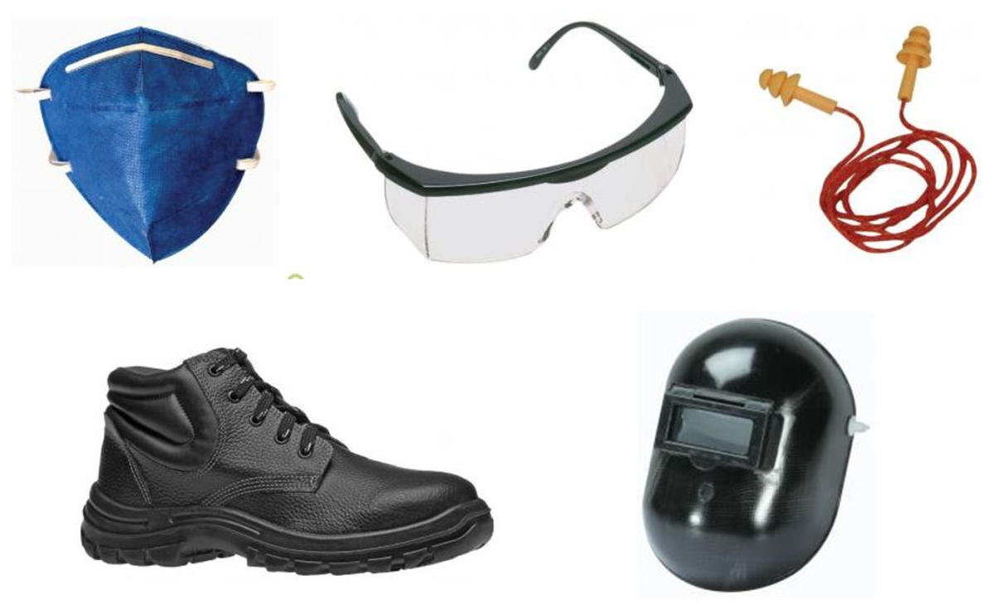

Esse site contém um compilado de conteúdos e reflexões elaborados durante um período de participação como membro de equipe de
Formula SAE 08-14. A ideia é prover um material acelerador para as equipes e estimular a documentação/passagem de conhecimento.
Atenção! As ideias expostas refletem uma visão enviesada de uma
pessoa dentro de um contexto de equipe e tecnologias da época, portanto deve ser filtrado/criticado para determinar o que é util ao leitor.
Introdução
A equipe de Formula SAE é composta por alunos que muitas vezes
entram na equipe sem conhecimento prévio do funcionamento dos
equipamentos da oficina e sem saber quantificar os riscos aos quais
podem estar expostos. Como a manufatura do carro se baseia no uso de
produtos químicos e máquinas que oferecem risco à integridade física
do membro, torna-se necessária o emprego de medidas de segurança e
de orientação no uso das máquinas e produtos. Esta cartilha busca
orientar os membros com relação à segurança no trabalho na oficina e
nos testes.
Principalmente para preservar a integridade física dos membros.
Um acidente pode gerar um fardo que a pessoa tenha que carregar pelo
resto da vida.
Por que a gente se preocupa?
Por que fazemos trabalhos em oficina que oferecem risco a saúde
e a integridade física do membro.
Dar segurança a todos os integrantes da equipe e visitantes,
para que possam realizar seu trabalho sem sofrer danos que acarretem
em sequelas temporárias ou definitivas;
Reforçar a imagem de profissionalismo da Equipe perante a
universidade, patrocinadores e visitantes;
Evitar acidentes que podem se tornar graves ou até em tragédias
(danos permanentes aos integrantes, à imagem da equipe,
desclassificação ou encerramento da equipe por ordem da
Universidade);
Melhoria da organização na oficina, redução do tempo de serviço,
aumento na qualidade das peças e aumento da vida útil dos
equipamentos;
Qualificar os integrantes da equipe a se comportar em um
ambiente de chão de fábrica no qual podem se deparar no futuro
profissional.
Redução do número de ocorrências, de acidentes leves e prevenção
de graves acidentes, através da mudança de comportamento dos
integrantes na oficina, tornando o trabalho mais profissional e mais
seguro.
Habilitação no uso dos equipamentos: aumento da segurança do
operador e de terceiros.
Aumento da qualidade das peças produzidas e redução do desgaste
das ferramentas.
Será considerada ocorrência toda e qualquer situação que
apresentou risco aos integrantes da equipe, resultando em vítimas ou
não.
Exemplo de ocorrência sem vítima: Queda de material de certa
altura, explosão/queima não esperada, acidente que causou destruição
do EPI, mas sem danos ao operador.
Exemplo de ocorrência com vítima: Acidente que causa qualquer
tipo de lesão (fraturas, cortes, queimaduras, farpas, reações
alérgicas, perda de audição por determinado período).
Solução para evitar ocorrências: Procedimentos adequados e uso de
Equipamentos de Proteção Individual (EPI’s)
Eletricidade: Bateria e tomadas – Nunca unir os dois
polos, Evitar curto-circuitos e ficar atento quando manusear
ferramentas condutoras de eletricidade;
Rotativos: Torno, esmeril, esmerilhadeira, furadeira,
policorte – Nunca parar a máquina com a mão, não operar com manga
comprida, corrente, pulseira ou cabelos compridos soltos, fixar bem
a peça e a ferramenta antes da operação, não forçar a máquina,
manter desligado e desengatado quando não estiver utilizando ou
efetuar troca de ferramenta, observar o sentido de giro e de corte,
usar óculos de proteção, cuidado com o calor gerado pelo atrito,
cuidado com arestas cortantes, evitar que pessoas fiquem no plano de
rotação do cabeçote, não tentar segurar a peça com a mão para
realizar a operação. Fone de ouvido somente por dentro da camisa ou
sem fio. Mulheres com cabelos longos presos. Não usar correntes,
pulseiras ou relógio;
De corte: serra de blanque, novamente: esmerilhadeira,
policorte – segurar firme, fixar bem peça e ferramenta, observar o
sentido de giro e de corte, evitar direcionar o feixe de fagulhas
para pessoas e partes delicadas ou inflamáveis, não forçar a
ferramenta, manter desligado quando não estiver usando, usar óculos
de proteção, atenção para flexão da ferramenta em cortes compridos,
não tentar segurar a peça com a mão para realizar a operação;
Motor, combustível, partes quentes (exaustão, radiador,
reservatório de água, óleo e retificador) e gases de exaustão –
Atenção às partes rotativas, manter extintor próximo, não tocar ou
verificar temperatura antes da manutenção, verificar se não há fios
encostando nas partes quentes, não abrir a tampa do reservatório de
água caso o carro ferver, atenção no abastecimento, não fumar
próximo de combustíveis, evitar transbordo de combustível, manter o
combustível longe de fontes de calor e fagulhas, não respirar o
vapor de combustível ou de gases de exaustão, não ficar exposto por
tempo prolongado a esses gases e vapores, sempre que possível
trabalhar em local ventilado quando houver esses gases e vapores, é
possível usar máscara de proteção para atenuar efeito dos
gases;
Forno, Soprador, isqueiro e maçarico – Não direcionar a
tocha para pessoas ou inflamáveis, não utilizar com inflamáveis
próximos, não tocar ou verificar a temperatura antes da manutenção,
desligar sempre que não estiver em uso, alertar outras pessoas sobre
uso recente, esperar esfriar antes de guardar, manter extintor
próximo;
Fibra de vidro, Fibra cerâmica (exaustão), Fibra de Carbono
e Resinas – Podem provocar alergias ou queimaduras, operar com
luvas apropriadas quando possível, utilizar máscara, atenção a
reação da resina e catalizador com o recipiente, atenção a pontas
cortantes após a laminação e durante acabamento;
Ar comprimido – utilizar óculos de proteção quando
houver a possibilidade de detritos atingirem os olhos, atenção para
não projetar poeira e detritos nas pessoas próximas;
Solda – utilizar máscara de solda, não olhar para a luz
direta sem a máscara, não fechar o circuito (risco de choque), não
tocar partes recém soldadas devido ao calor, manter extintor
próximo, proteger a pele em caso de uso prolongado, não utilizar
próximo de inflamáveis, retirar terras do carro;
Prensa e guilhotina* – não temos na oficina;
Thinner, querosene e tintas – utilizar em local
ventilado, usar máscara para atenuar efeito dos gases e conter
particulados suspensos no ar, risco de alergia e ressecamento das
mãos, ler rótulo do produto para obter maiores informações de
segurança, não utilizar próximo de fontes de calor;
Ferro de solda – atenção ao utilizar perto de
inflamáveis, olhar para o ferro antes de pegá-lo, colocar em apoio
apropriado, desligar após o uso;
Alicate de corte, martelo, arco de serra e chaves em
geral – não utilizar para os fins que não foram projetados,
atenção para a direção de corte da serra, não forçar chaves com
catraca;
Nos testes:
Pessoas na pista (locais) – Não ficar na tangência da
trajetória ou muito próximo à pista, distribuir na pista de modo a
alcançar o carro rapidamente em caso de emergência, ficar atento ao
carro para focos de incêndio e peças soltas/quebradas, não ficar em
local encurralado
Extintores – distribuídos na pista, verificar validade
e carga, não deixar próximo a pista.
Ponto de vista do piloto – não gritar quando não for
necessário, manter a calma em caso de qualquer ocorrência, informar
o piloto sobre peças com possibilidade de apresentar problema,
combinar código de parada de emergência com o piloto, piloto sempre
utilizando equipamento dos pilotos, sempre alertar piloto quando for
realizar manutenção fora de seu campo de visão, avisar o piloto para
desligar o carro em caso de manutenção prolongada;
Gente em volta do carro ligado – evitar aglomeração em
volta do carro ligado, sempre deixar espaço para evasão do
piloto.
Manutenção em seguida (partes quentes) – atenção para
as partes quentes do carro quando for realizar manutenção em
testes;
Carro suspenso – evitar longos tempos de baixo do
carro, evitar ficar de baixo do carro com muitas pessoas realizando
manutenção, verificar se o carro está suspenso estável o suficiente,
ficar atento a pessoas realizando manutenção debaixo do carro, não
realizar operações ‘pesadas’ ou com fluidos quando houver um membro
debaixo do carro;
Reabastecimento – atenção ao reabastecimento, manter
extintor próximo, não se distrair, abastecer em duas pessoas, evitar
transbordo;
Presença de extintores de incêndio nos testes – levar
quantidade suficiente de extintores, verificar carga e
validade;
Áreas de escape para o carro – assegurar que a pista
possui área de escape suficiente para a velocidade atingida, não
posicionar pessoas ou objetos nessas áreas, montar o trajeto da
pista de modo a viabilizar essas áreas;
Luminosidade – garantir luminosidade adequada para a
realização do teste e identificação de problemas;
Estado físico e psicológico do piloto – avaliar estado
físico e psicológico do piloto antes dele entrar no carro.
Velocidade / risco de atropelamento ou colisão – ficar
atento a posição do carro na pista para o caso de perda de controle,
evitar a região dianteira do carro quando ele estiver parado com o
motor ligado;
Na manutenção do carro:
Fluido de freio – risco de alergia, causa ressecamento
das mãos.
Não ‘enfiar’ a mão sem saber onde está colocando.
Arestas cortantes – evitar deslizar ou apoiar a mão
sobre partes do carro com potencial de possuir arestas
cortantes.
Carro suspenso
Comportamento:
Limpeza
Organização
Conforto/Ergonomia
Não ter pressa!
Concentração
Evitar trabalhos perigosos após noites viradas
Não fazer brincadeira com gente trabalhando. Evitar distrair a
pessoa.
Evitar estar sozinho na oficina quando estiver trabalhando.
Evitar usar ferramentas/máquinas para outro propósito além
daquela para o qual foi projetada e deve operar.
Bom senso.
Se sentir a vontade para não fazer alguma atividade (em favor da
segurança)
Pedir ajuda sempre que necessário (para outros membros ou
funcionários da universidade)
Máquinas ‘pesadas’ e solda MIG devem ser operadas por pessoal
qualificado, com curso técnico.
Existe uma grande variedade de Equipamentos de
Proteção Individual que podem ser
utilizados. A determinação do uso dos EPI´s deve variar de acordo
com a atividade que vai ser exercida. Sendo que pode ser alterada de
acordo com a necessidade do operador ou que for relatado
historicamente em ocorrências.
EPI´s básicos: Abafador de ruído, máscara respiratória
óculos de proteção, camisa, calça (tecido de algodão), sapato
fechado.
EPI´s Específicos: máscara de solda, luva, mangote,
avental, botina de bico, luva de raspa, etc

Para a execução do projeto de segurança será obrigatório o uso
dos equipamentos de segurança individuais de acordo com subsistema
da equipe durante a permanência na oficina.
Recomenda-se adquirir o kit básico de EPI:
óculos: utilizados quando o processo expele fragmentos
que podem atingir os olhos ou quando existe o risco da própria peça
ou ferramental se quebrar e atingir os olhos;
máscara: utilizado quando o processo ou o ambiente está
contaminado com fuligem ou particulados. Também quando o processo
expele gases tóxicos (porém máscaras simples somente atenuam o
efeito dos gases tóxicos).
abafador de ruído / protetor auricular: utilizados com
máquinas que emitem ruído alto.
Vestimenta para trabalho na oficina: Camiseta manga curta, calça
e sapato fechado. Mulheres com cabelos longos presos. Correntes,
pulseiras ou relógio: não usar quando operando máquinas
rotativas.
Verificar validade e carga dos extintores periodicamente.
Usar os EPI’s e praticar as medidas de segurança do ambiente de
trabalho;
Organizar seu EPI;
Manter e comprar EPI, extintores de incêndio;
Zelar pela segurança nos testes (piloto e participantes);
Incentivar a prevenção de acidentes. Prestar ajuda e
orientar;
É adequado que o membro da equipe ajude na conscientização do
colega de trabalho nas funções da oficina, sendo que, em
persistência da atividade de risco, é obrigação do membro em relatar
o caso para o responsável da segurança para que este possa verificar
por si mesmo a situação e tomar as medidas cabíveis.
É obrigação do membro que relate aos chefes, gerentes e diretor
quaisquer dificuldades fora da sua capacidade que impossibilite
cumprir as determinações da segurança no trabalho. Para que, assim,
os chefes, gerentes e diretor possam tomar as atitudes adequadas.
Pois, fora isso, não devem ser toleradas desculpas.